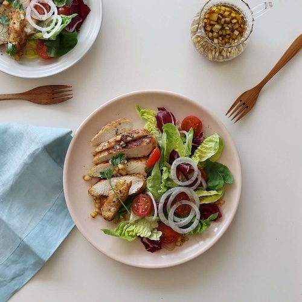
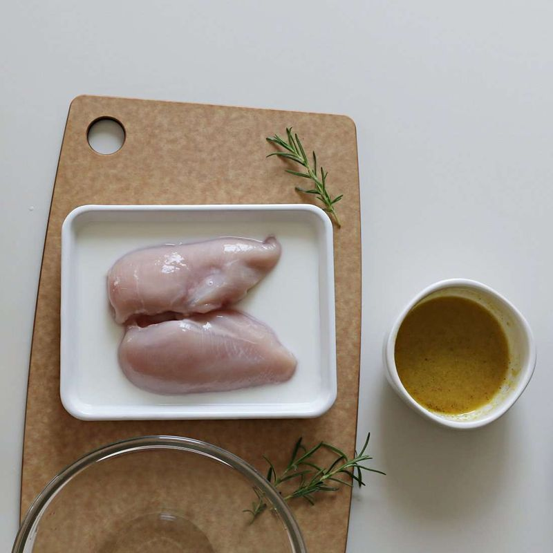
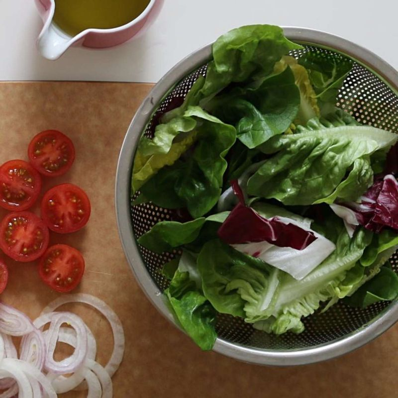
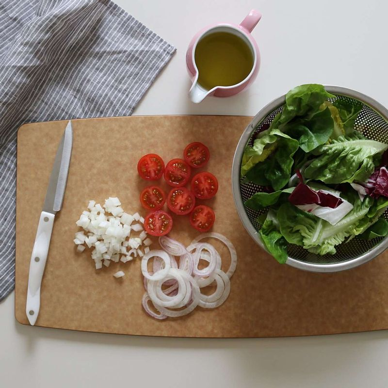
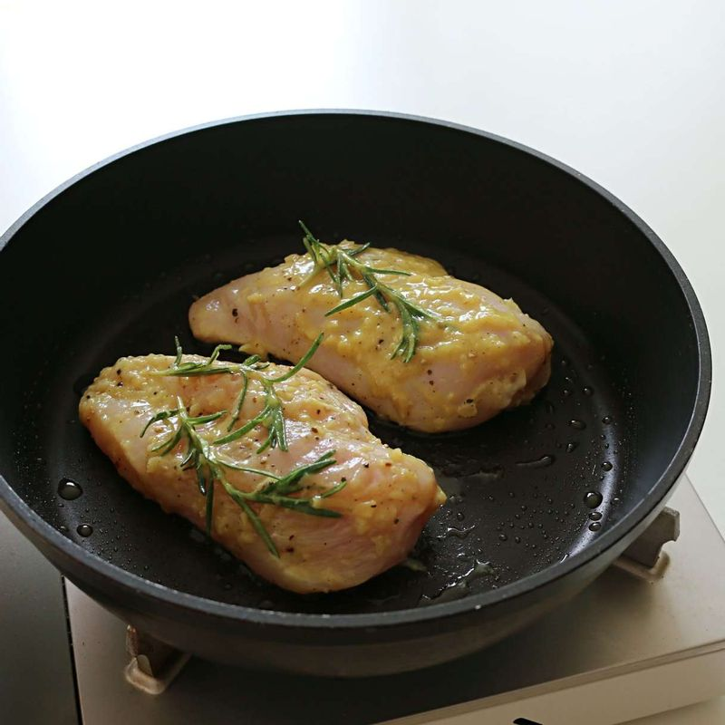
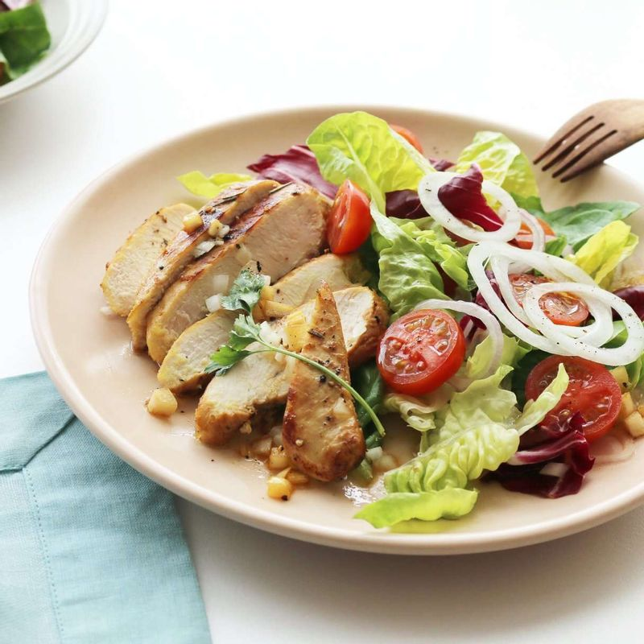

레시피1: 닭가슴살 샐러드
기본 재료
- 닭가슴살 300g
- 양파 1개
- 로메인 1통
- 라디치오 1/4통
- 토마토 1개
- 이태리파슬리 약간
- 우유 1/2컵
- 올리브유 약간
닭밑간
- 올리브유 2큰술
- 맛술 1큰술
- 머스터드 1/2큰술
- 다진 마늘 1/2큰술
- 소금, 후추 약간씩
- 로즈마리 약간
드레싱
- 올리브유 3큰술
- 간장 2큰술
- 식초 2큰술
- 다진 양파 2큰술
- 설탕 1큰술
- 참기름 1/2큰술
- 다진 마늘 1작은술
- 소금, 후추 약간
Step 1
닭가슴살은 우유에 10분 정도 담가두었다가 건져 낸 후, 물에 헹궈 물기를 제거하고 밑간 재료에 10분간 재워주세요.
Step 2
로메인과 라디치오는 먹기 좋은 크기로 자르고, 찬물에 담갔다가 물기를 제거해주세요.
Step 3
방울토마토와 양파는 얇은 링으로 썰어주세요.
Step 4
달군 팬에 약간의 올리브유를 두르고 닭가슴살의 표면을 노릇하게 구운 후, 약불로 줄이고 뚜껑을 닫아 10~12분 정도 은근히 구워 속까지 익혀주세요.
Step 5
볼에 드레싱 재료를 넣고 섞어주세요. 접시에 잎채소를 담은 후, 구워놓은 닭가슴살을 먹기 좋게 잘라 올리고 드레싱을 뿌려주세요.